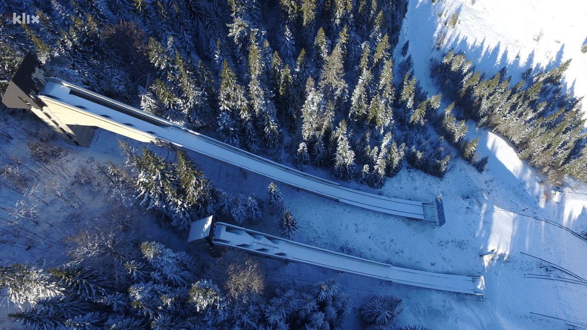
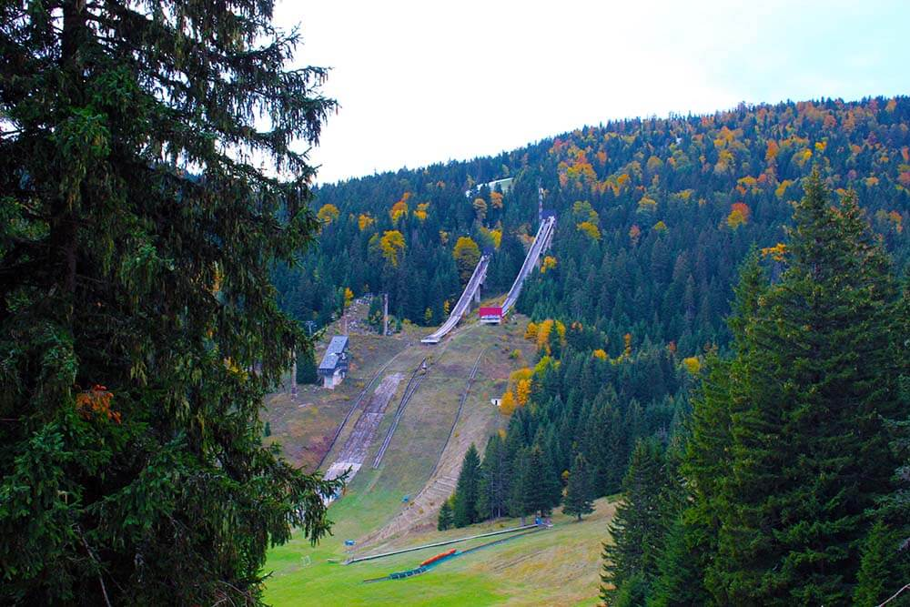
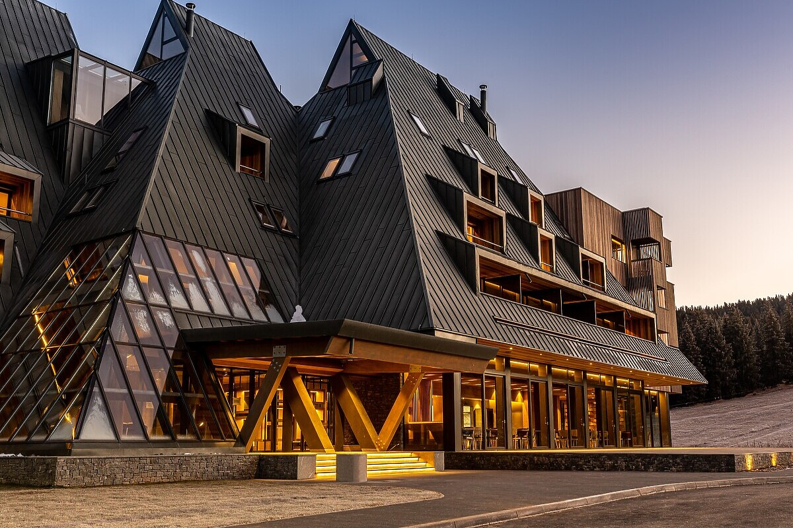
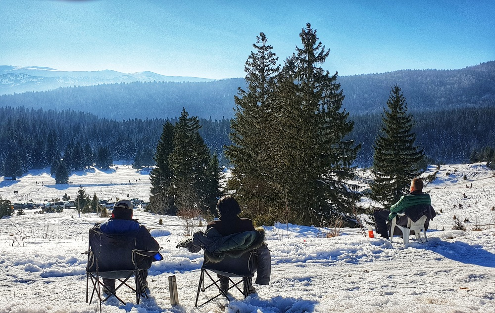
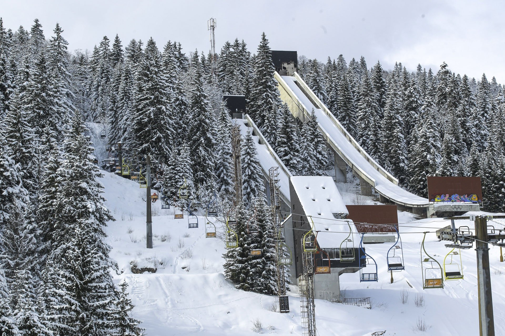

Samo 25 kilometara jugozapadno od Sarajeva nalazi se prirodni rezervat planine Igmana na kojem je održan veći dio takmičenja 14. zimskih Olimpijskih igara u alpskim i nordijskim disciplinama i skokovima. Za vedrih dana sa Igmana pruža spektakularan pogled sve do Crne Gore i Jadranskog mora.
Kako je sav ovaj prostor obrastao gustom šumom s mnogobrojnim životinjskim vrstama, ova planina je omiljeno mjesto za lov, ali i alpinizam, paraglajding, jahanje, planinarenje, planinski biciklizam, vožnju planinskim četverotočkašima.
Sa više od 200 snježnih dana u godini, 135 cm debelim snježnim pokrivačem i dobro uređenim stazama dužine preko dvadeset kilometara, Bjelašnica i Igman predstavljaju savršeno mjesto za aktivan zimski odmor i rekreaciju, s dobrom hotelskom i drugom infrastrukturom.
Igman je planina sa ekstremno visokom koncentracijom ozona, pa je kao zračna banja izuzetno pogodan za treninge sportskih ekipa. Veliko polje je za vrijeme Olimpijade služilo za takmičenje u nordijskim disciplinama, a zajedno s Bjelašnicom ima oko 50 kilometara staza za nordijsko trčanje, te 160 obilježenih staza za brdski biciklizam.
Na Malom polju na Igmanu su za potrebe Olimpijade izgrađene dvije skakaonice, od 70 i 90 metara. Na Igmanu se nalazi i jedinstveni lokalitet Mrazište (pojava toplotne inverzije), a najniža temperatura od -43,5 °C zabilježena je u januaru 1963. godine, zbog čega se ovdje nekada nalazilo uzgajalište srebrenih lisica.